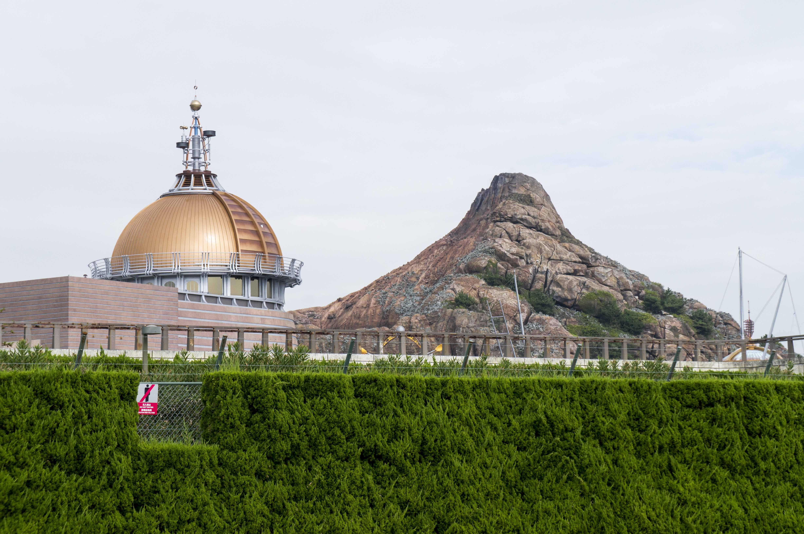
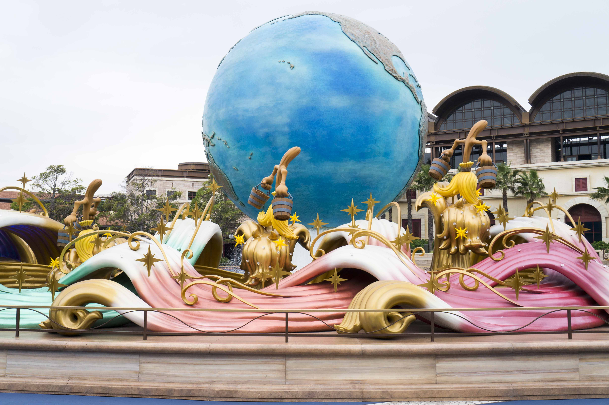
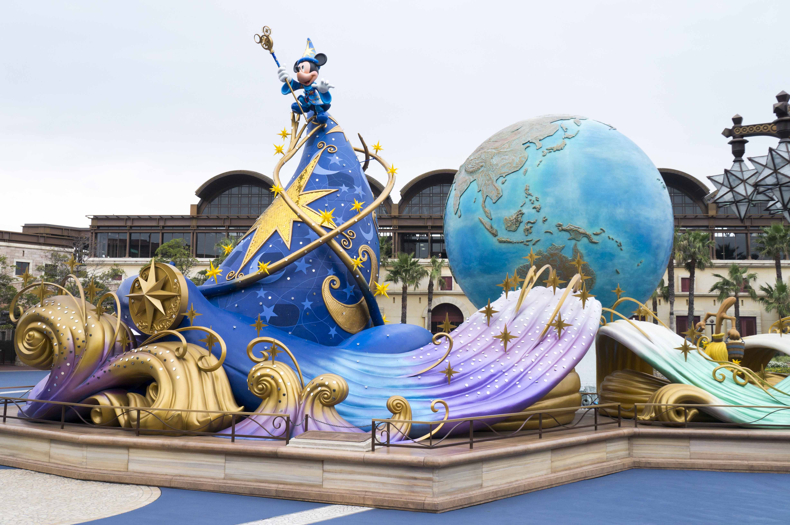

Day7
Welcome to Day7

Finally came down to the last day of our Tokyo trip, this is our first time been to Tokyo's Disney, so we were all super excited about it! After we have our breakfast and done packing up our luggages, we headed down to the train station.
| Morning | Noon / Afternoon | Night |
|---|---|---|
| Hostel, packing up, train ride | Disney Sea | Disney Sea |
We took our ride from the Asakusa Station, and this was how we got to Disney Sea.
Or in case you too lazy to clicked the link~
After we arrived the Disneyland's train station it was already noon, so we have our lunch over there.

Now, it is time for story again, funny one actually. After our meal at the food court, we realized that the rail ride from the station only takes you to Disneyland! Now, here is the funny part. It is fact that it only takes you into the Disneyland, what we did not know was that the Disneyland and Disney Sea are connected! Sooo~ We took a long walk around outside of the Disney Sea. And this is what it looks like from the outside!

It was 30 minutes walk, see, this is why I said it's a funny story. Well, if you want to know what the Disney Sea theme park look like in the front area then wonder no more!
 
This is it for Part 1! For Part 2, I will include more photos for what the theme park look from the inside and it's AMAZING! So, keep tune to my journal. See you at the Part 2!